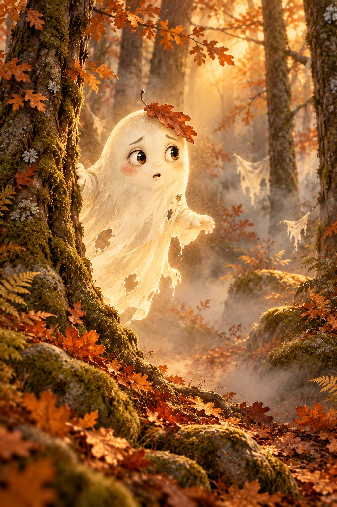

Radar ist aus

Wischt den Nebel weg
Fahrt mit dem Finger über das Radar. Wo ihr wischt, wird es klar.
Weiter mit dem nächsten QR Code.
Radar ist aus

Fahrt mit dem Finger über das Radar. Wo ihr wischt, wird es klar.
Weiter mit dem nächsten QR Code.